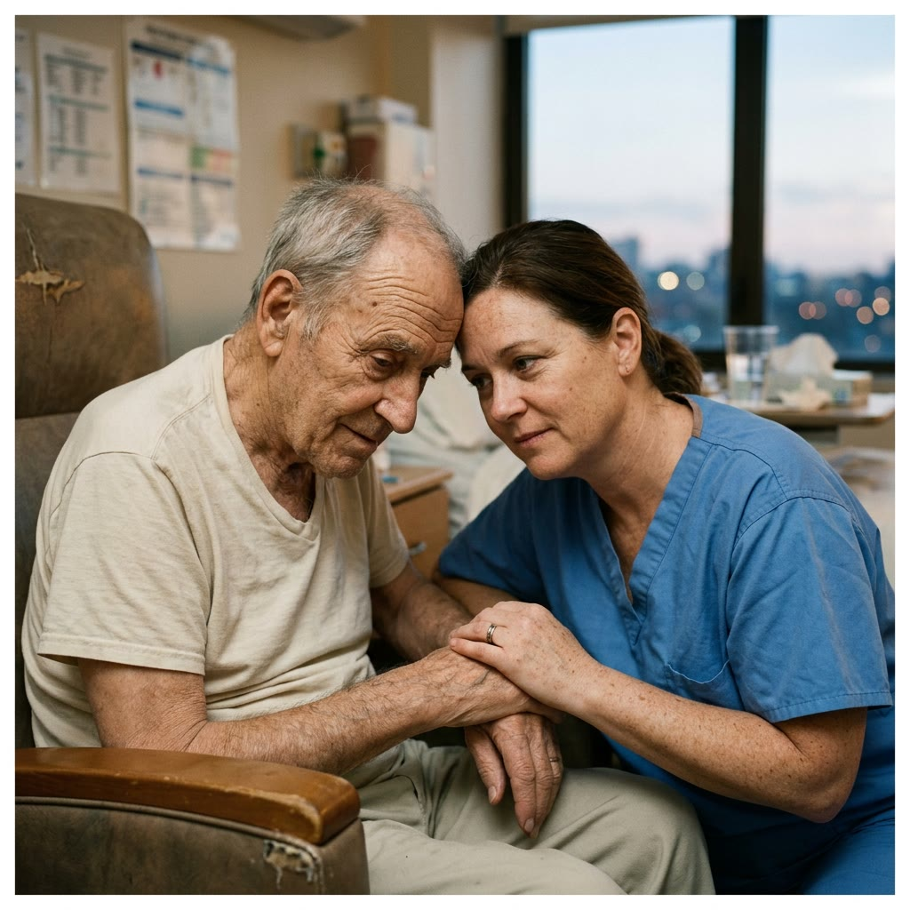

"Tudo Que Temos Para Agradecer" é um documentário de média-metragem (25-35 min). Acompanha o cotidiano da hemodiálise como base temática, propondo uma reflexão de sensibilidade rara sobre o ato de agradecer.
O projeto parte de uma realidade impositiva para revelar algo maior: a capacidade humana de reconhecer presença, afeto e sentido. A gratidão não aparece apesar da dor — ela nasce dentro da própria vivência.
O filme não explica. Ele revela.
Não conduz. Não impõe. Não dramatiza.
Cria espaço aberto para percepção.
Conceito Central
Premissa
O filme não revela algo novo. Ele mostra coisas do dia a dia, do ordinário — que muitas vezes passam despercebidas, mesmo sendo profundamente valiosas.
A Observação
O documentário não se constrói a partir de respostas, mas de observações. Observações que, muitas vezes, só conseguimos enxergar quando atravessamos grandes mudanças — e então percebemos que tudo já estava ali, conectado. Bastava ligar os pontos.
O Espectador
Ao desacelerar o olhar, o que parecia comum começa a ganhar significado. E, aos poucos, o espectador deixa de acompanhar uma história e passa a se reconhecer dentro dela.
Por que isso
importa
/ O Humano
Mais do que mostrar uma condição, o filme amplia o olhar sobre quem vive ela.
Revela presença, relações e tudo aquilo que sustenta a vida no cotidiano.


/ A Percepção
Ao deslocar o foco da doença, o filme transforma a forma como enxergamos a vida.
Mesmo em contextos difíceis, revela o quanto ainda existe para ser reconhecido — e agradecido.

A Importância
Para quem vive essa realidade, o filme amplia o olhar sobre a própria experiência — não a partir da dor, mas do que realmente sustenta a vida.
Para quem está ao redor — família, amigos, cuidadores — ele revela uma dimensão muitas vezes invisível: o tempo, o cuidado, a presença.
E para quem nunca viveu isso, cria algo mais raro: a possibilidade de perceber, com mais sensibilidade, aquilo que normalmente passa despercebido.
“Não é uma mensagem que se impõe.
É uma experiência que aproxima.”
E é isso que cria uma conexão real, duradoura e difícil de ignorar.
A força da presença
O filme não acompanha histórias pela intensidade do que acontece — mas pela forma como cada pessoa se relaciona com a vida.
São presenças que sustentam o tempo, o silêncio e o olhar. E é a partir delas que o filme se constrói.

A leveza no cotidiano
Encontra respiro nas pequenas coisas.
Mostra que a gratidão também pode ser simples.
O introspectivo
Fala pouco, mas revela muito.
A presença está no olhar, não nas palavras.


O que se ancora nas relações
Vive a experiência através dos vínculos.
Afeto e suporte como parte do que sustenta.
O resiliente
Segue com firmeza, sem dramatizar.
Adaptação como forma de força.


O contraste geracional
Amplia o olhar através da diferença de tempo e experiência.
Outra forma de perceber a mesma realidade.
Em movimento
A leveza no cotidiano
O introspectivo
O que se ancora nas relações
O resiliente
O contraste geracional
Estrutura e Distribuição
O projeto é pensado para existir além do filme —
com circulação, desdobramentos e presença em diferentes contextos.

Festivais
Brasil & Internacional"Circuito pensado para posicionamento cultural e reconhecimento."
- Festival de Gramado
- Mostra Int. de Cinema SP
- Festival do Rio
- É Tudo Verdade
- IDFA
- Hot Docs
- Sheffield DocFest
Exibições institucionais
"Presença em contextos onde o tema se expande com relevância."
- Congressos médicos
- Fóruns de saúde
- Eventos institucionais
- Exibições especiais


Desdobramentos do projeto
"O filme como núcleo de um ecossistema narrativo."
- Fragmentos do documentário
- Retratos individuais
- Conteúdos para redes
- Material institucional

A Parceria
DaVita Apresenta
"Tudo Que Temos Para Agradecer"
A Presença
"A DaVita participa como apresentadora do projeto, viabilizando sua realização. Sua presença se dá de forma natural — inserida no cotidiano dos pacientes, como parte real da experiência vivida."
A Humanização
"Mais do que representar um tratamento, o filme revela a dimensão humana ao redor dele. Relações, cuidado e presença ganham espaço — ampliando a conexão com aquilo que realmente sustenta a vida."
A Autoridade com Sensibilidade
"A marca se posiciona no território do cuidado não apenas como serviço, mas como experiência. Uma presença que compreende, acompanha e se conecta de forma profunda."
A Associação
"Ao se vincular a uma obra autoral, a DaVita constrói uma associação emocional forte — baseada em percepção, e não em discurso."
A Continuidade
"Essa conexão não se encerra no filme. Ela se expande ao longo da circulação, dos desdobramentos e dos diferentes contextos onde o projeto se faz presente."
A Expansão
"Para além do documentário, o projeto se desdobra em conteúdos derivados da própria captação. Fragmentos, recortes e narrativas que se adaptam a diferentes contextos."
A Parceria
DaVita Apresenta
"Tudo Que Temos Para Agradecer"
A Presença
"A DaVita participa como apresentadora do projeto, viabilizando sua realização. Sua presença se dá de forma natural — inserida no cotidiano dos pacientes, como parte real da experiência vivida."
A Humanização
"Mais do que representar um tratamento, o filme revela a dimensão humana ao redor dele. Relações, cuidado e presença ganham espaço — ampliando a conexão com aquilo que realmente sustenta a vida."
A Autoridade
com Sensibilidade
"A marca se posiciona no território do cuidado não apenas como serviço, mas como experiência. Uma presença que compreende, acompanha e se conecta de forma mais profunda."
A Associação
"Ao se vincular a uma obra autoral, a DaVita constrói uma associação emocional forte — baseada em percepção, e não em discurso."
A Continuidade
"Essa conexão não se encerra no filme. Ela se expande ao longo da circulação, dos desdobramentos e dos diferentes contextos onde o projeto se faz presente."
A Expansão
"Para além do documentário, o projeto se desdobra em conteúdos derivados da própria captação do DOC. Fragmentos, recortes e narrativas que se adaptam a diferentes contextos."
"Tudo Que Temos Para Agradecer"
não é apenas o nome do filme — é o que permanece.